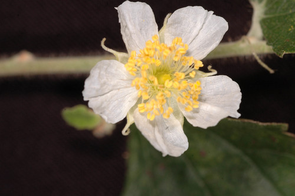

Muntingiaceae
Calabur Tree Family
Muntingiaceae is a small family of flowering plants comprising trees and shrubs, placed in the order Malvales within the Rosids clade. The family contains only three genera, each with a single species: Muntingia, Dicraspidia, and Neotessmannia. Native to the Neotropics (tropical Americas), they are characterized by often stellate hairs, alternate leaves frequently asymmetrical at the base, flowers with numerous stamens, and fruit a fleshy berry. Muntingia calabura is widely cultivated pantropically.
Overview
The Muntingiaceae family is very small, consisting of only three species, each in its own genus. These are fast-growing trees or shrubs native to tropical America. The family was established relatively recently based on molecular data, grouping together genera previously placed uncertainly or within families like Tiliaceae or Elaeocarpaceae (now part of Malvaceae and Oxalidales, respectively).
These plants often feature stellate (star-shaped) hairs on various parts. They belong to the large and diverse Malvales order, which includes well-known families like Malvaceae (cotton, hibiscus, cacao), Cistaceae (rockroses), and Dipterocarpaceae (tropical timber trees).
The most prominent member is Muntingia calabura (Calabur Tree, Jamaican Cherry, Panama Berry), which is notable for its rapid growth, tolerance of poor conditions, and edible, sweet berries that are attractive to birds and bats. It has been widely introduced and naturalized in tropical regions worldwide, sometimes becoming weedy.
Quick Facts
- Scientific Name: Muntingiaceae C.Bayer, M.W.Chase & M.F.Fay
- Common Name: Calabur Tree family
- Number of Genera: 3 (Muntingia, Dicraspidia, Neotessmannia)
- Number of Species: 3
- Distribution: Native to Neotropics (tropical Americas); Muntingia widely naturalized pantropically.
- Evolutionary Group: Eudicots - Rosids - Malvids - Malvales
Key Characteristics
Growth Form and Habit
Trees or shrubs, often fast-growing. Typically covered with indumentum (hairs), often stellate or glandular.
Leaves
Leaves are alternate, simple, usually serrated or dentate, and often asymmetrical or oblique at the base. Venation is typically palmate or pinnate. Stipules are present, often linear or thread-like, sometimes falling early.
Inflorescence
Flowers are solitary or borne in few-flowered clusters (fascicles), often supra-axillary (arising just above the leaf axil) or appearing opposite the leaves.
Flowers
Flowers are bisexual and actinomorphic (radially symmetrical). Key features include:
- Sepals: (4-)5(-7) sepals, valvate in bud (meeting at edges without overlapping), free or slightly connate at base, often reflexed after opening.
- Petals: (4-)5(-7) petals, free, often white, typically crumpled in bud and ephemeral (lasting only a day).
- Androecium: Stamens numerous (10 to many), free, arising from a short receptacle or annular disc. Anthers are small, dehiscing by longitudinal slits.
- Gynoecium: Ovary is superior, composed of 5-7 fused carpels (syncarpous). It is multilocular (as many chambers as carpels), with numerous ovules per locule on prominent axile placentas that often protrude into the chambers. Style is short and thick or absent, with a broad, lobed stigma.
Fruits and Seeds
The fruit is a fleshy berry, globose, containing numerous very small seeds embedded in a sweet pulp.
Chemical Characteristics
Chemical constituents are less uniquely defining than in some families, but mucilage cells may be present, a common feature in Malvales.
Field Identification
Identifying Muntingiaceae involves recognizing their tree/shrub habit, often stellate hairs, alternate asymmetrical leaves, flowers with numerous stamens, and berry fruits.
Primary Identification Features
- Habit: Trees or shrubs (Neotropical origin).
- Hairs: Often covered in stellate or glandular hairs.
- Leaves: Alternate, simple, serrated, often asymmetrical at base.
- Flowers: Actinomorphic, 5 petals (usually white, crumpled in bud, ephemeral), numerous stamens.
- Ovary: Superior, multilocular (5-7 carpels).
- Fruit: Fleshy berry with numerous small seeds.
- Inflorescence: Solitary or few-flowered clusters, often supra-axillary.
Secondary Identification Features
- Sepals: Valvate, often reflexed.
- Stipules: Present, often linear or falling early.
- Placentation: Axile, often protruding into locules.
Seasonal Identification Tips
- Flowering/Fruiting Season: Can flower and fruit over extended periods in tropical climates. The ephemeral white flowers (opening in morning, petals falling by afternoon) and the small, berry fruits are key.
- Vegetative Features: The combination of alternate, asymmetrical, serrated leaves with stellate hairs is characteristic.
Common Confusion Points
- Malvaceae (sensu lato, including Tiliaceae): Many Malvaceae also have stellate hairs and alternate leaves. However, Malvaceae flowers often have stamens fused into a tube (monadelphous stamens) and fruit typically a capsule, schizocarp, or less commonly a berry/drupe (but with different ovary structure).
- Elaeocarpaceae: Some have similar leaves, but flowers often have fringed petals and fruit is usually a capsule or drupe, not a berry with numerous small seeds in pulp. (Now in Oxalidales).
- Flacourtiaceae (sensu lato, now mostly Salicaceae): Some tropical trees/shrubs have similar leaves, but flower structure (often unisexual, different stamen/ovary structure) and fruit types differ.
Field Guide Quick Reference
Look For:
- Trees/shrubs (Neotropical origin)
- Stellate hairs often present
- Alternate, simple, asymmetrical leaves
- Flowers with 5 white, ephemeral petals
- Numerous free stamens
- Superior, multilocular ovary
- Berry fruit with many small seeds
Key Variations:
- (Only 3 species, variations mainly between genera)
- Hair type (stellate, glandular)
- Leaf shape details
- Flower position (supra-axillary vs. axillary)
Notable Examples
The family comprises only three monotypic genera:

Muntingia calabura
Calabur Tree, Jamaican Cherry, Panama Berry, Strawberry Tree
A fast-growing small tree native to tropical America, now widely naturalized pantropically. Known for its rapid growth, tolerance of poor soils, horizontally spreading branches, soft leaves with stellate hairs, ephemeral white flowers, and edible sweet red berries.

Dicraspidia donnell-smithii
(No common name)
A tree found in Central America (from Costa Rica to Honduras). Differs from Muntingia in having larger flowers and fruits, and distinctive scale-like, peltate (umbrella-like) hairs mixed with stellate hairs.

Neotessmannia uniflora
(No common name)
A rare shrub or small tree known only from Peru and Ecuador. Characterized by solitary flowers and leaves with predominantly simple or glandular hairs rather than stellate ones.
Phylogeny and Classification
Muntingiaceae is placed in the order Malvales, within the Malvids clade of Rosids (eudicots). This placement is strongly supported by molecular phylogenetic analyses.
Within Malvales, Muntingiaceae represents one of the earlier diverging lineages. It is often considered sister to Cytinaceae (a family of holoparasitic plants, surprisingly nested within Malvales) or part of a clade including Cytinaceae and Neuradaceae. It is clearly distinct from the core Malvales families like Malvaceae, Dipterocarpaceae, and Cistaceae.
Position in Plant Phylogeny
- Kingdom: Plantae
- Clade: Angiosperms (Flowering plants)
- Clade: Eudicots
- Clade: Rosids
- Clade: Malvids
- Order: Malvales
- Family: Muntingiaceae
Evolutionary Significance
Despite its small size, Muntingiaceae is significant for understanding Malvales evolution:
- Basal Lineage in Malvales: Its position helps reconstruct ancestral traits for the order, such as floral structure and fruit type, before the major radiations seen in families like Malvaceae.
- Biogeography: Its Neotropical origin contributes to understanding the assembly and diversification of tropical American floras within the context of the Malvales order.
- Rapid Growth and Colonization: Muntingia calabura serves as a model for studying traits associated with rapid growth, early reproduction, and successful colonization of disturbed habitats.
- Fruit Evolution: The berry fruit contrasts with the capsules and schizocarps common in many other Malvales families.